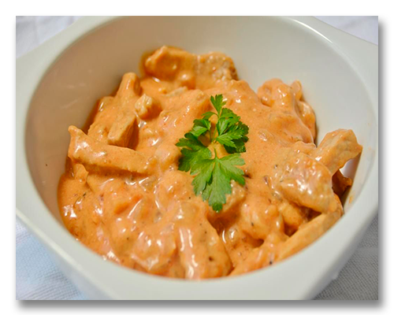
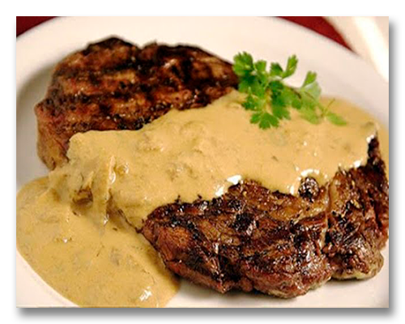

A mostarda é uma planta cuja semente é utilizada na preparação de condimentos para carnes, legumes e saladas, e que possui sabor intenso e picante e além das sementes, as folhas da mostarda também podem ser consumidas. Pertencente à família Brassicaceae, que inclui também outras plantas como brócolis, couve-flor e repolho. É uma planta anual que pode crescer até um metro de altura e possui flores amarelas pequenas que se agrupam em cachos.
Os primeiros registros citam o cultivo da semente da mostarda pelos chineses há mais de três mil anos. Era bastante utilizada também por antigas civilizações do mediterrâneo, como egípcios, gregos e romanos. Os romanos, aliás, foram os primeiros a utilizar o pó da mostarda com o vinho. A mistura foi batizada de mustum ardens (mosto ardido, em latim) e foi daí que surgiu o termo mostarda.
| Tabela Nutricional | % VD (*) | % |
| Calorias (valor energético) | 7.37 kcal | 0.37% |
| Carboidratos líquidos | 0.22 g | - |
| Carboidratos | 0.59 g | 0.20% |
| Proteínas | 0.48 g | 0.16% |
| Gorduras totais | 0.44 g | 0.80% |
| Gorduras saturadas | 0.03 g | 0.13% |
| Fibra alimentar | 0.36 g | 1.45% |
| Sódio | 124.85 mg | 5.20% |
Existem várias espécies de mostarda, porém as três espécies de mostarda mais utilizadas no preparo do molho: Sinapis alba (mostarda branca), Brassica nigra (mostarda negra) e Brassica juncea (mostarda marrom). Já a mostarda de Dijon, uma das mostardas mais famosas foi desenvolvida na França e tem sua receita em segredo e protegida por lei desde 1937.
A mostarda pode ser cultivada em qualquer época do ano e, para isso, primeiro se deve adquirir sementes já processadas. Então, faça covas de cinco centímetros e enterre os grãos. Assim, realiza uma rega para firmar o solo e, pronto! Não cultive mais que 3 sementes por vaso e mantenha uma distância de 30 cm entre as plantas.
|
Ingredientes: | |

| |
Modo de Preparo:
1. Corte a carne em cubos pequenos e coloque em uma panela boa para fritar juntamente com a margarina e o alho bem picadinho;
2. Tampe a panela e coloque em fogo baixo, deixe evaporar toda a água e a margarina ser absorvida, assim que começar a fritar a carne mexa devagar até dourar a seu gosto;
3. Quando estiver dourada a carne acrescente
a mostarde e catchup, mexa bem, coloque o creme de leite, misture bem, desligue o fogo e sirva em seguida;
4.Para quem gosta de mais "caldo" pode dobrar a quantidade de mostarda catchup e creme de leite;
5. Sirva se em seguida
junto a arroz branco e batata palha.
|
Ingredientes: | |

| |
Modo de Preparo:
1. Em um recipiente coloque a mostarda e o sal. Misture bem;
2. Com um pincel (uso culinário) espalhe a mostarda em um lado do bife;
3. Leve o bife à churrasqueira em fogo brando, com o lado que está com a mostarda voltada para o braseiro. Passe o restante da mostarda no outro lado do bife (lado que ficou para cima);
4. Quando o bife de
alcatra estiver dourado, retire da churrasqueira (O tempo de preparo depende do braseiro utilizado) ;
5. Prato pronto é só servir e bom apetite.